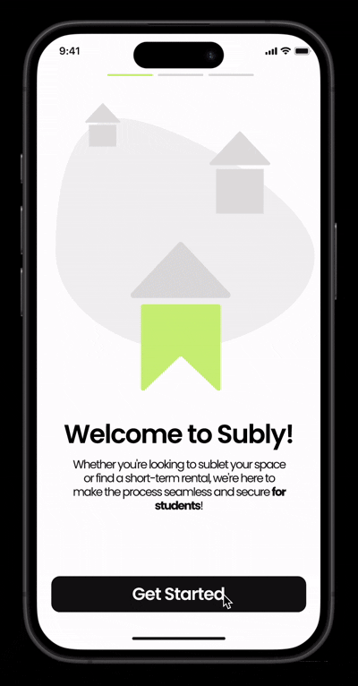
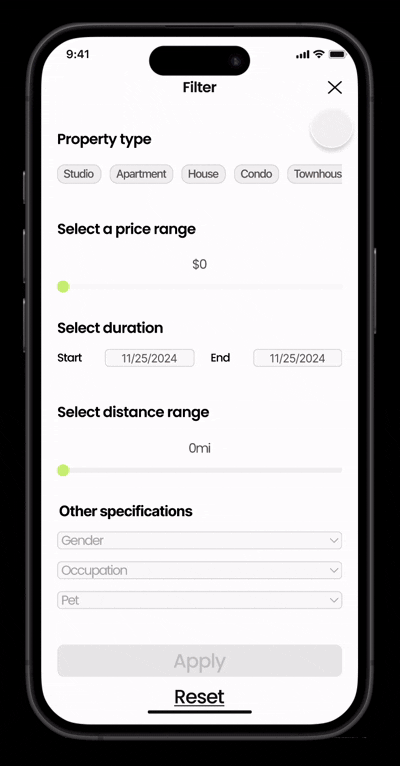
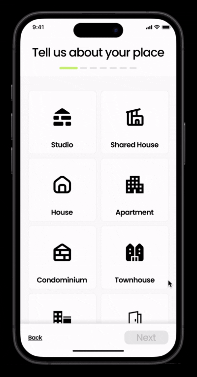

Sori
An always-on Cochl sound recognition feature integrated with AirPods, visualized through a UI/UX mockup
Timeline
July 2025 -
August 2025
Team (2)
Christine Jeong
(Product Designer)
Pureun Kim
(Product Manager)
Skills
UX Research
UI/UX Design
Prototyping
Branding
Description
Sori is a speech behavior app designed to help users build self-awareness in how they communicate.
By integrating with AirPods, it delivers real-time voice analysis and a personalized dashboard that reflects tone, pacing, and word patterns without interrupting conversations.
As the UI/UX Designer, I led the design process in Figma, shaping the app's structure, interface, and user flows. My focus was on making feedback intuitive, unobtrusive, and actionable.
Puren Kim, the Product Manager, guided the product direction by defining core problem space and prioritizing features, which allowed me to design a more focused and impactful solution.
Background
Understanding how we speak, and how it affects our interactions, is surprisingly hard.
While communication drives daily life, people rarely get immediate, meaningful feedback on their tone, word choice, or speech patterns.
Misunderstandings, repetitive phrasing, and unintentional tone shifts can go unnoticed, leaving users unaware of how they present themselves in conversations.
Sori was created to give users a contextual, real-time reflection of their speech behavior, helping them improve self-awareness and communication skills naturally.
Scope
Despite the prevalence of voice-driven technology, there's a gap:
- Passive awareness: Most tools require active engagement or logging to understand speech patterns.
- Behavioral reflection: Users don't get insights about tone, pacing, or frequent words in daily conversation.
- Personalization: Existing solutions rarely adapt to a user's unique speech style or conversational context.
Opportunity: Build a personal auditory copilot that observes, interprets, and guides users in real time, without interrupting daily life.
The Problem
How might we help users understand their speech habits, discover patterns, and improve self-awareness through an always-on, privacy-safe interface?
Research
To define the feature, we explored:
- How do people currently track their speech behavior?
- What challenges exist in gaining real-time, actionable feedback?
We conducted interviews with 5 frequent AirPods users and sent a survey to 30 students.
Key Insights:
- Users are unaware of tone shifts or filler words during conversations.
- Passive tools often feel invasive or cumbersome.
- Contextual insights (conversation length, interaction patterns) are more useful than generic analytics.
The Solution
Sori: an always-on speech behavior tool integrated with AirPods.
Core Features
- Always-On Voice Monitoring: Continuously tracks speech patterns in real time via AirPods without interrupting conversations.
- Personalized Dashboard: Visualizes tone, pacing, filler words, and frequently used phrases, tailored to each user's speech style.
- Contextual Insights: Highlights conversational patterns, interaction length, and trends over time, giving actionable feedback.
- Historical Trends & Analytics: Allows users to review past conversations and track improvement over time.
Design Decisions
Always-on, yet unobtrusive
We focused on subtle notifications and ambient awareness, ensuring users felt informed but not distracted.
Actionable personalization
Insights were designed to be meaningful, visually digestible, and specific to individual behavior.
Collaboration & Development
Puren and I worked closely to bring Sori to life. Puren defined the product vision, prioritized features, and ensured the solution addressed real user needs. I translated these insights into a cohesive UI/UX design, creating intuitive flows, a personalized dashboard, and visual feedback mechanisms. Together, we iterated rapidly on prototypes, aligning design and functionality to deliver an unobtrusive, user-centered speech behavior tool.
Final Design
1. Onboard Flow

2. Real-Time Voice Analysis

3. Dashboard
